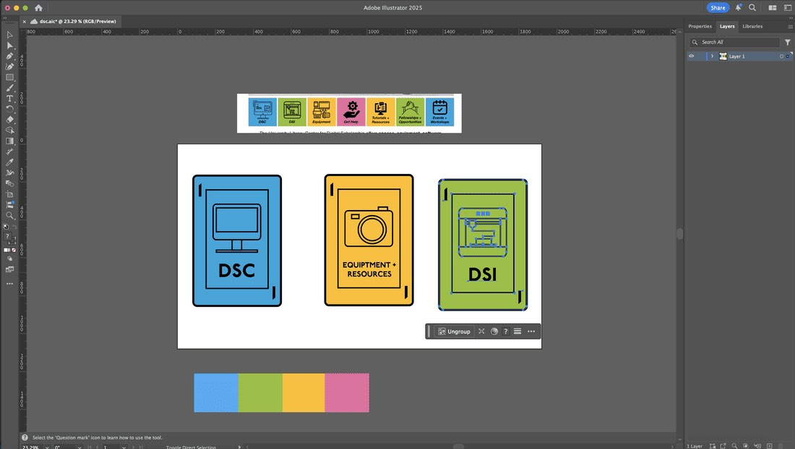
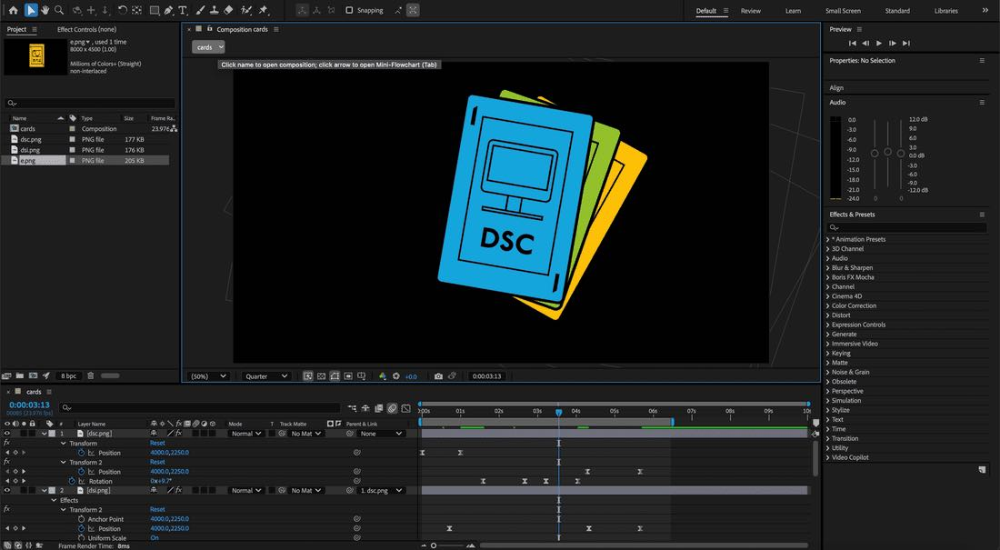
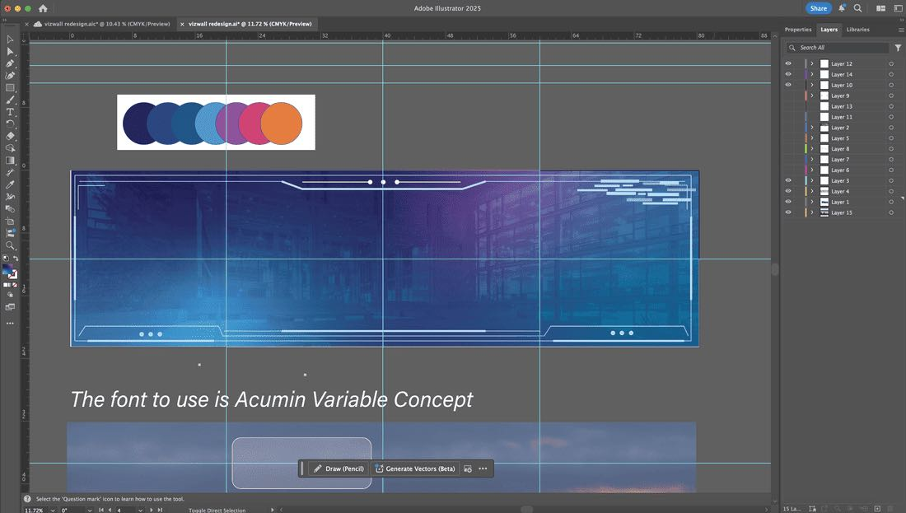
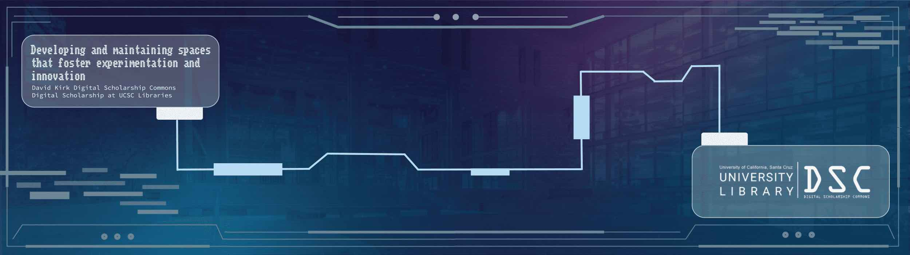
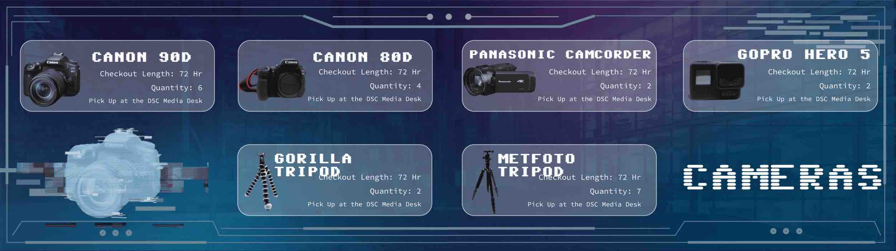
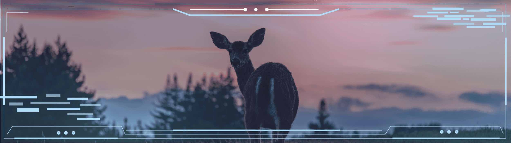

Vizwall Slideshow
At our space in at the Digital Scholarship Commons (DSC) located on the ground floor of the McHenry Library of UCSC, there is a large scale slideshow display that runs from 24/7 conveying information about the space itself, including the different resources it has and upcoming events that the space holds on occasion. The space is mostly used for studying, but also hold the resources to help with projects that include digital tools. The DSC has cameras, microphones and even a VR headset available for students to check out at their desires. Additionally, the various M series Mac Studio computers help students with video, audio and 3D projects that require more processing power than their average laptop. Despite all of this, many students don't know about these additional resources, so the purpose of the slideshow is to direct attention to the library's resources.
The slideshow itself is displayed on a wall of eight large scale monitors that act like one computer. It's located right when you enter the space, so almost everyone will see it at some point.
When I first took the job back in 2022, there was a previously running slideshow that had been created by one of my predecessors. For the first year or so of my job, I simply edited the existing slideshow with updated information. However, as the years went by, the slideshow was beginning to look a bit outdated, a bit boring. My manager, Daniel Story, suggested that I draft a new and updated slide show design. He wanted something completely different in the space that could be more engaging to the hundreds of students who walk through the space daily. So, over around 15 weeks, from October 2024-February 2025, I worked on developing a slide show.
My manager and I both agreed that moving images and animations would be beneficial to the display, as it is more eye catching than simply static images. So I first spent time creating different animations in After Effects. (And creating assets in Illustrator if needed).


After this, I imported the animations into a mockup slide show. (Unfortunately this file was overrid when I built my final version so I cannot show it). I experimented with mp4 files, apng and gif. In the end, it appeared that Google Slides only liked gifs because I ran into many other issues with the other files types including the animation would not play or the file would not load.
After I had the animations, I decided to draft an aesthetic concept for the slideshow. Currently, with the rise of AI, futuristic design concept are popular, so I thought that it would be fun to design around that. Besides, that concept fits with the space and it's focus on digital tools for learning.
I then went to work on the design, building it from scratch. Because I don't like the limitations of Google Slides, I decided to build the project in Illustrator.

Because the file has to be so large, as the display spans an entire wall, I made the Illustrator dimensions 80" x 20" however, Google Slides does not like large files, so when importing back into Google Slides, the images were heavily compressed. The crisp lines of my design were pixelated and fuzzy. So to combat this issue, I decided to break the Illustrator file up into Artboards that fit with the separate monitors. This allowed me to keep the quality of the original file while being able to use the tools of Illustrator instead of Google Slides.
After these roadbumps, the next step was to simply compile all of my assets to create my finished project. Below are screenshots of some of the slides. I will also link the presentation to see all of them in action. It is currently being displayed at the DSC.



See full project HERE